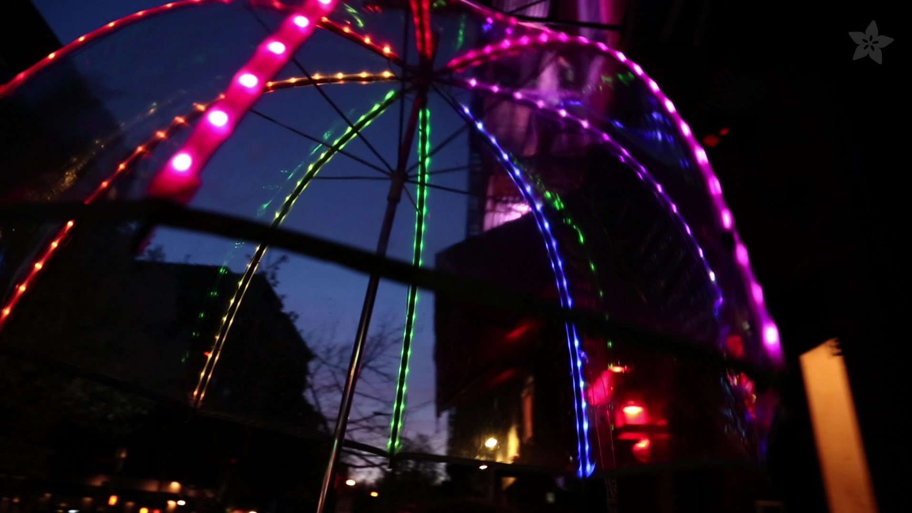
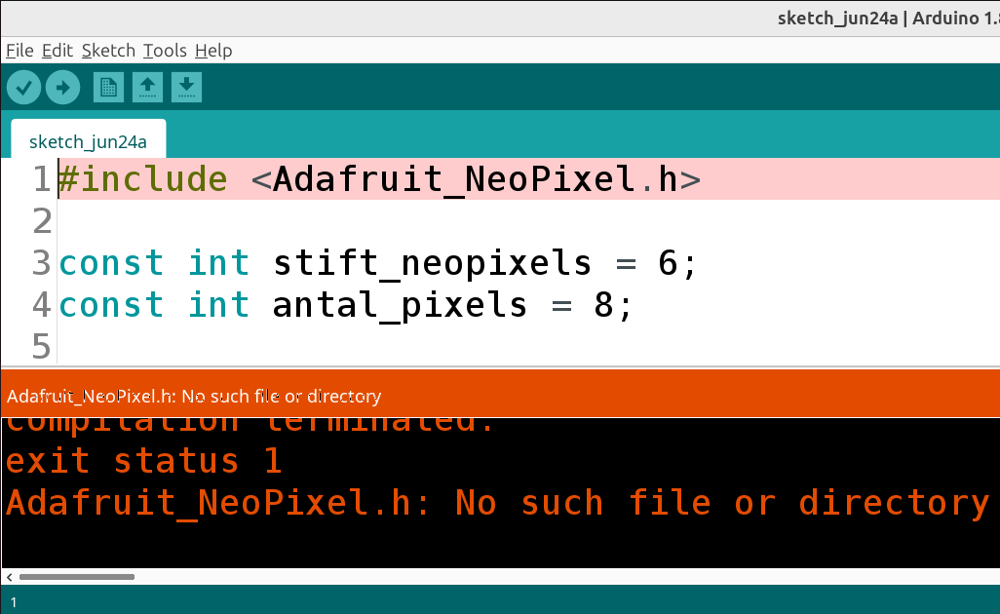
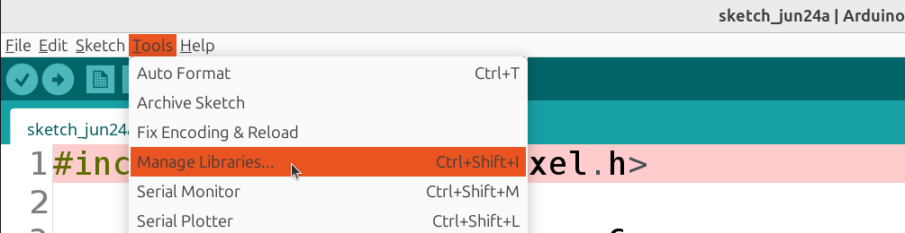
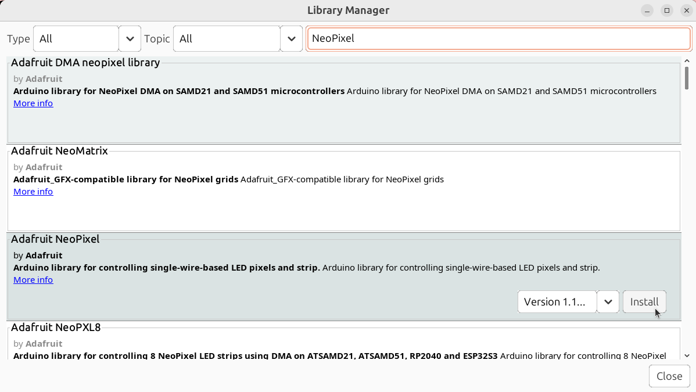
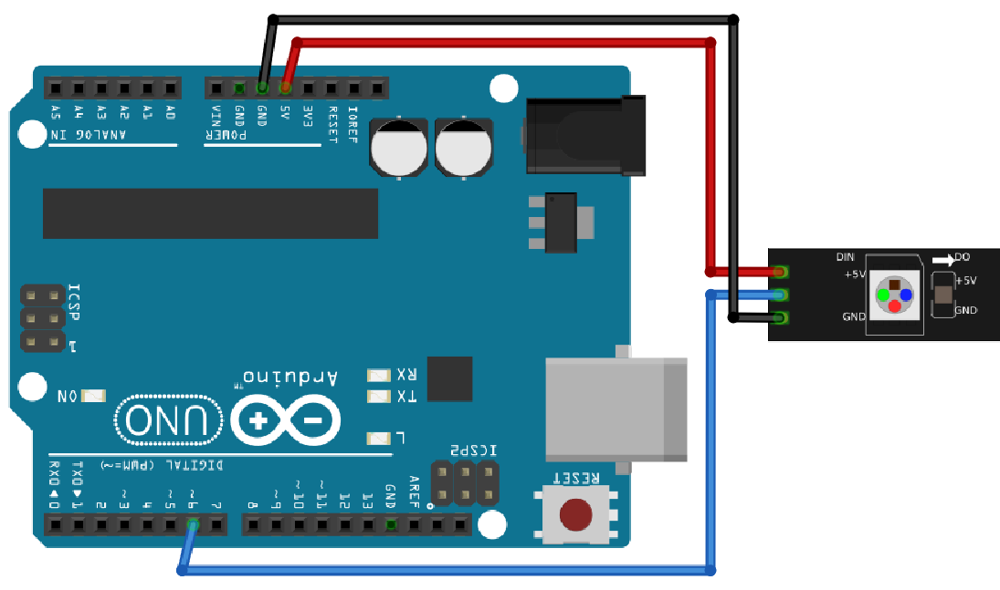
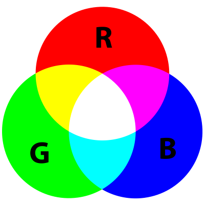

Lektion 33: Användning av neopixels¶
Under den här lektion gör vi Blink med NeoPixels!

FLORAbrella, ett paraply med NeoPixels
33.1. Att installera biblioteket¶
Försöker att ladda upp följande kod till Arduinon:
#include <Adafruit_NeoPixel.h>
const int stift_neopixlar = 6;
const int antal_pixlar = 8;
Adafruit_NeoPixel pixlar = Adafruit_NeoPixel(
antal_pixlar,
stift_neopixlar,
NEO_GRB + NEO_KHZ800
);
void setup()
{
pixlar.begin();
}
void loop()
{
pixlar.setPixelColor(0, Adafruit_NeoPixel::Color(32, 0, 0));
pixlar.show();
delay(1000);
pixlar.setPixelColor(0, Adafruit_NeoPixel::Color(0, 0, 0));
pixlar.show();
delay(1000);
}
 |
Detta är koden likadant lektion 1 |
|---|---|
Kankse du får ett felmelding,
Adafruit_Neopixel.h: no such file or directory:

 |
 |
|---|---|
#include <Adafruit_NeoPixel.h> |
Ladda biblioteket för att använda neopixlar |
Lösningen är att installera biblioteket för att använda neopixlar.
Klicka på 'Tools | Manage libraries':

|
|
|---|---|
| Tools | verktyg |
| Manage libraries | Arbeta med bibliotekar |
Leta efter 'Adafruit NeoPixel' och klicka på 'Install':

Ladda up koden. Nu bör den funkar!
33.2. Anslutning och första intryck av koden¶

Anslut en Arduino till NeoPixels så här:
| Stift NeoPixels | Stift Arduino |
|---|---|
| GND | GND |
| 5V | 5V |
| DIN | 6 |
Vad ser du? Och vad gissar du att den nya koden betyder?
33.2. Svar¶
Den första lysdioden blinkar.
| Steg | Hur det ser ut |
|---|---|
| 1 | |
| 2 |
|
|
|---|---|
Adafruit_NeoPixel pixlar = Adafruit_NeoPixel(...) |
'Bästa dator, skapa en NeoPixel objekt' |
|
|
|---|---|
Adafruit_NeoPixel(antal_pixlar, ..., ....) |
'Mina NeoPixlar har så mycket lysioder' |
|
|
|---|---|
Adafruit_NeoPixel(..., stift_neopixlar, ...) |
'Mina NeoPixlar är kopplat till Arduinon med den här stift' |
|
|
|---|---|
Adafruit_NeoPixel(..., ..., NEO_GRB + NEO_KHZ800) |
'Mina NeoPixlar är den här typ' |
|
|
|---|---|
pixlar.begin() |
'Bästa dator, låt Arduino och NeoPixlar känna varann' |
|
|
|---|---|
pixlar.setPixelColor(0, ...) |
'Bästa dator, sätt färgen av den nollde lysdioden' |
|
|
|---|---|
Adafruit_NeoPixel::Color(32, 0, 0) |
'Bästa dator, färgen är rod' |
|
|
|---|---|
pixlar.show() |
'Bästa dator, låt lysdioderna visa sina färger.' |
| Har du glömt här ljusfärger smälta sammans? Se figuret nedåt | |
|---|---|

Färgcirkel. Här kan du ser att gul är en blandning av röd och grön.
| Färg | Röd | Grön | Blå |
|---|---|---|---|
| Röd | 32 | 0 | 0 |
| Gul | 32 | 32 | 0 |
| Blå | 0 | 0 | 32 |
33.3. Att blinka två lysdioder¶
I koden nu blinkar den första lysdiod.
Ändra koden nu så, att den andra lysdioden lyser grön när den röda lysdioden är släckt.
| Steg | Hur det ska ser ut |
|---|---|
| 1 | |
| 2 |
33.3. Svar¶
#include <Adafruit_NeoPixel.h>
const int stift_neopixlar = 6;
const int antal_pixlar = 8;
Adafruit_NeoPixel pixlar = Adafruit_NeoPixel(
antal_pixlar,
stift_neopixlar,
NEO_GRB + NEO_KHZ800
);
void setup()
{
pixlar.begin();
}
void loop()
{
pixlar.setPixelColor(0, Adafruit_NeoPixel::Color(32, 0, 0));
pixlar.setPixelColor(1, Adafruit_NeoPixel::Color(0 , 0, 0));
pixlar.show();
delay(1000);
pixlar.setPixelColor(0, Adafruit_NeoPixel::Color(0, 0 , 0));
pixlar.setPixelColor(1, Adafruit_NeoPixel::Color(0, 32, 0));
pixlar.show();
delay(1000);
}
33.4. Att blinka tre lysdioder¶
I koden nu blinkar den först två lysioder.
Ändra koden nu så, att en tredje lysdioden lyser i blåt.
| Steg | Hur det ska ser ut |
|---|---|
| 1 | |
| 2 | |
| 3 |
33.4. Svar¶
#include <Adafruit_NeoPixel.h>
const int stift_neopixlar = 6;
const int antal_pixlar = 8;
Adafruit_NeoPixel pixlar = Adafruit_NeoPixel(
antal_pixlar,
stift_neopixlar,
NEO_GRB + NEO_KHZ800
);
void setup()
{
pixlar.begin();
}
void loop()
{
pixlar.setPixelColor(0, Adafruit_NeoPixel::Color(32, 0, 0));
pixlar.setPixelColor(1, Adafruit_NeoPixel::Color(0 , 0, 0));
pixlar.setPixelColor(2, Adafruit_NeoPixel::Color(0 , 0, 0));
pixlar.show();
delay(1000);
pixlar.setPixelColor(0, Adafruit_NeoPixel::Color(0, 0 , 0));
pixlar.setPixelColor(1, Adafruit_NeoPixel::Color(0, 32, 0));
pixlar.setPixelColor(2, Adafruit_NeoPixel::Color(0, 0 , 0));
pixlar.show();
delay(1000);
pixlar.setPixelColor(0, Adafruit_NeoPixel::Color(0, 0, 0));
pixlar.setPixelColor(1, Adafruit_NeoPixel::Color(0, 0, 0));
pixlar.setPixelColor(2, Adafruit_NeoPixel::Color(0, 0, 32));
pixlar.show();
delay(1000);
}
33.5. Att lysa mer pixlar¶
Koden här nere lysar alla pixlar gradvis.
#include <Adafruit_NeoPixel.h>
const int stift_neopixlar = 6;
const int antal_pixlar = 8;
int vilken_led = 0;
Adafruit_NeoPixel pixlar = Adafruit_NeoPixel(
antal_pixlar,
stift_neopixlar,
NEO_GRB + NEO_KHZ800
);
void setup()
{
pixlar.begin();
}
void loop()
{
pixlar.setPixelColor(vilken_led, Adafruit_NeoPixel::Color(32, 0, 0));
pixlar.show();
delay(100);
vilken_led = vilken_led + 1;
}
Andra koden att den gör lysdioderna blåa istället.
33.5. Svar¶
Dett finns bara en skillnad:
blir
33.6. Blå är med¶
Använd nu inte ett blaa väde på 32, utan av vilken_led. Vad ser du?
33.6. Svar¶
Koden blir ändrat från ...
till den här:
För att där koden blir för långt, man skriver detta på flera rad:
Du ser nu att lysdioderna lyser från mörkt blå till mer och mer ljusblå.
33.7. Röd är med¶
Använd nu inte ett röd vaerde på 0, utan av 32 - vilken_led. Vad ser du?
33.7. Svar¶
Koden blir från:
till
Du ser nu att den blåa del av ljuset fortfarande blir lysare. Men nu också ser du att den röda del av ljuset börjar ljusröd och blir mer och mer mörkrart. Tillsammans heter färgen magenta.
33.8. Röd ökar¶
Istället för att alltid göra vilken_led högre,
vi kan också göra det med en ny variabel: roed_vaerde.
Skapa en ny variabel, av typen "int", med namnet roed_vaerde och initialvärdet noll.
Använd roed_vaerde där
du bestämmer det röda värdet på en lysdiod.
Låt roed_vaerde öka med 1 varje gång.
33.8. Svar¶
För att lägga till variablen roed_vaerde,
koden blir från
till
För att använda den, från ...
till ...
For att öka rödvärdet, ändra koden från ...
till ...
33.9. Blå minskar¶
Istället för att alltid göra vilken_led högre,
vi kan också göra det med en ny variabel: blaa_vaerde.
Skapa en ny variabel, av typen int, med namnet blaa_vaerde och initialvärdet 32.
Använd blaa_vaerde där du bestämmer det blåa värdet på en lysdiod.
Låt blaa_vaerde minska med 1 varje gång.
33.9. Svar¶
För att lägga till variablen blaa_vaerde
med initialvärdet 32,
koden blir från ...
till ...
För att använda den, från ...
till ...
For att minska blåvärdet, ändra koden från ...
till ...
33.10. Pixlar loopar¶
Vår maskin gör nu igenom all lysdioder bara en gång.
Använd en if-sats: om vilken_led är större än antal_pixlar,
så ska vilken_led blir noll igen.
33.10. Svar¶
Koden blär ändrat från ...
till ...
33.11. Röd loopar¶
I vårt program nu överstiger röttvärdet 32.
Använd en if-sats: om dett röda värdet är större än 32,
att dett röda värdet blir noll.
Svar¶
Koden blir från ...
till ...
33.12. Blå loopar¶
I vårt program nu gåt blåttvärdet under noll,
även om det gör ingenting i praktiken.
Använd en if-sats: om dett blåa värdet är mindre än noll,
att dett blåa värdet blir 32.
33.12. Svar¶
Koden blir från ...
till ...
33.13. Slutuppgift¶
Skapa en ny variabel groent_vaerde, som bestämmer det gröna värdet
för lysdioderna.
Den här får hela tiden gå med två (istället för ett).
Om detta värdet är över 32, måste den blir noll igen.